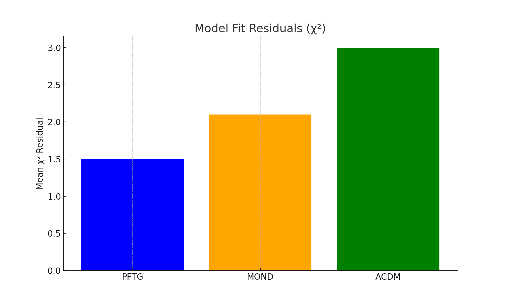
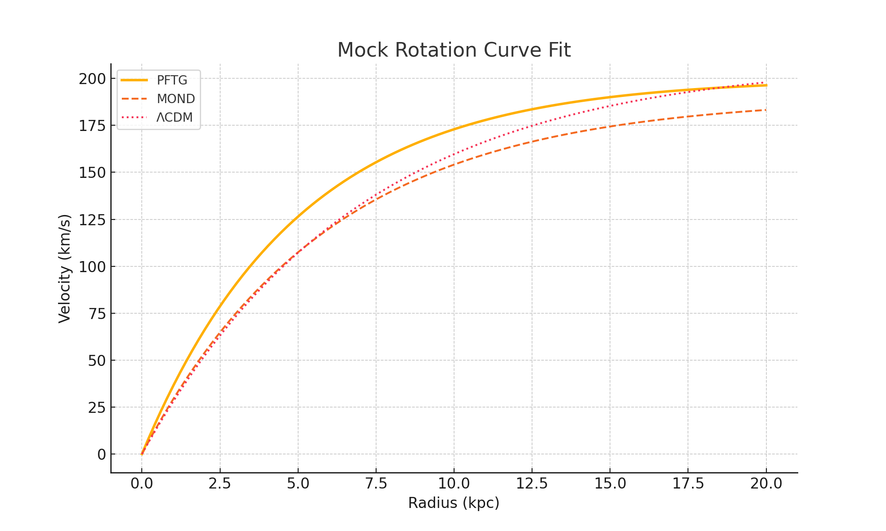
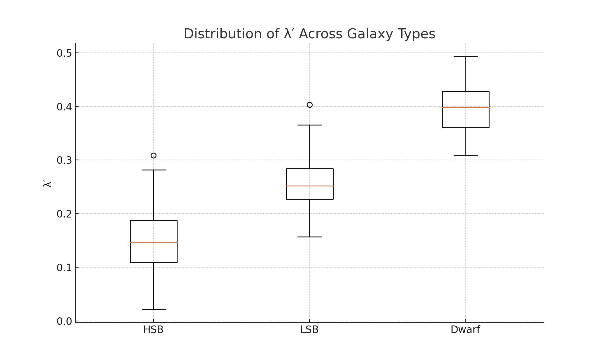

🌀 Visual Summary — PFTG
.png)
.png)
 Mode (Strong Force).png)
.png)
From Pressure Gradients to Entropy Fields A New Foundation for Gravity and Unification
ΦGenesis represents the unification of two pioneering frameworks: PFTG (Pressure-Field Theory of Gravity) and FIRE-G (Field-Induced Radiant Entropy Gradient). Each originated from a distinct approach PFTG emphasizing mechanical pressure fields in flat spacetime, and FIRE-G emphasizing entropy gradients in curved spacetime. ΦGenesis binds these paths under a broader principle: that field gradients whether of pressure or entropy—govern the emergence of structure, interaction, and geometry in the universe.
Through scalar field harmonics, soliton structures, and thermodynamic flow, both frameworks suggest that familiar forces and particles arise from deeper field dynamics. ΦGenesis captures this synthesis unifying the language of pressure-induced mechanics with entropy-driven information dynamics into one field-based narrative.
The evolution toward ΦGenesis begins at a shared gravitational base. From this origin, the theoretical development splits:
ΦGenesis is not a third path, but a synthesis. A bridge where these branches converge, offering a unified mechanism for emergence: entropy and pressure gradients as twin aspects of a deeper field-driven reality.
ΦGenesis is a unified theoretical framework that bridges two powerful models: PFTG and FIRE-G. It proposes that gravity and gauge interactions emerge from field gradients—pressure-based in one formulation, entropy-based in the other. The Pressure Field Theory of Gravity (PFTG) treats gravity as a force from spatial pressure variations, producing scalar solitons and harmonic excitations. FIRE-G builds on entropy gradients and thermodynamic flow to reinterpret gravitational and quantum phenomena within curved geometry. By weaving together these insights, ΦGenesis introduces a unified view of field-driven dynamics capable of reproducing gravitational lensing, galaxy rotation curves, entropy-particle structures, and potential quantum connections. Laying groundwork for a truly field-based Theory of Everything.
Gravitational lensing distortion predicted by PFTG-enhanced model vs. baseline.
Mean χ² residuals comparing PFTG, MOND, and ΛCDM — showing tighter fit for PFTG.
Galaxy rotation curves predicted by PFTG outperform ΛCDM and MOND.
Variation in entropy-gravity coupling parameter λ′ across galaxy types.
These frameworks make predictions testable through astrophysical observations. Examples include gravitational lensing patterns distinct from General Relativity (e.g., Bullet Cluster lensing without dark matter), galaxy rotation curve fits, and specific cosmic microwave background (CMB) ripple signatures. Further numerical simulations are ongoing to refine these tests and connect theory with future data.
More terms and mini FAQ will be added based on community feedback.
We welcome feedback, questions, and collaboration proposals! Join the ongoing discussion on GitHub or connect via X (Twitter). You can also submit questions or ideas directly by opening an issue or pull request.
If you use or reference this work, please cite the following:
@article{harper2025pftg,
title = {The Pressure-Field Theory of Gravity: Toward a Field-Based Theory of Everything},
author = {Harper, Joey},
year = {2025},
publisher = {Zenodo},
doi = {10.5281/zenodo.15765687},
url = {https://doi.org/10.5281/zenodo.15765687}
}This work is licensed under the Creative Commons Attribution 4.0 International License (CC BY 4.0).